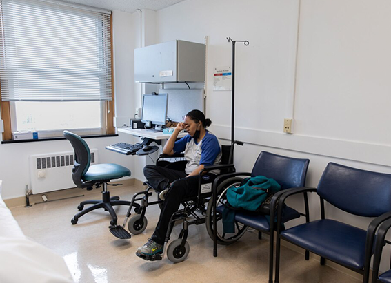
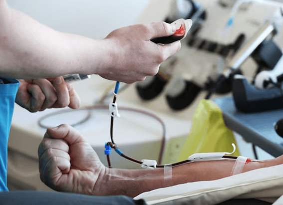

NATIONAL GEOGRAPHIC
Everything to Know About Shanghai
TRAVEL
Shanghai has a very busy, yet wonderfully stimulating pulse that will leave you addicted and craving more. Development is fast, and anything can happen any given day. Simultaneously, the city offers a world of opportunities to enjoy life just the way you like it, whether that’s eating well with friends, relaxing by the pool, exploring art and culture, or hiking in nearby mountains.
When to Go
The periods of March through May and September through November typically see the best weather in Shanghai, with comfortable temperatures and a relatively dry climate (with occasional rain to be expected). However, try to avoid the first week of October, when all of China celebrates its National Day holiday. During this time, many locals travel to their hometowns leaving shops and restaurants closed, and domestic tourists flock to see Shanghai, causing famous sites to be overly crowded.
Celebrate
Despite being China’s most modern, international city, traditional culture still thrives and heavily influences the everyday lives of Shanghai’s residents. The two major holidays are Chinese New Year in January and February and the National Day holiday the first week of October. Although visiting during these festivals may offer an amazing cultural experience, they are by far the busiest periods in terms of domestic travel, making getting around potentially uncomfortable or even difficult. April through May usually sees many festivals from traditional celebrations like Qingming Festival, May Day, and Dragon Boat Festival to contemporary events such as the Midi and Strawberry Music Festivals, International Tea Festival, and major international sports events like F1 Chinese Grand Prix and Longines Global Champions Tour.
What to Eat
Your visit to Shanghai isn’t complete without trying the most famous local dish, xiaolongbao. It is a delicate but wonderfully flavorful soup dumpling, typically made with ground pork inside a near translucent dough that then creates the most delicious broth, or “the soup,” inside when steamed. These little drops of heaven can be found throughout the city in simple hole-in-the-wall establishments, high end restaurants, and everything in between.
Souvenir to Take Home
Shanghai is an excellent destination for having clothes tailored affordably. Head over to the South Bund Fabric Market for an endless choice of tailor shops and seamstresses ready to whip you up a coat, suit, dress, or pretty much anything you can think of for your wardrobe. For best results, bring pictures and be as specific as possible when describing what you want. If you have a favorite piece you’d like to duplicate, lend it to the tailor while they create the new garment. Pay with cash and don’t forget to bargain.
Sustainable Travel Tip
Shanghai’s Metro network is extensive, affordable, and easy to use, even for foreigners. All signage is translated to English and there are multiple free Metro apps for your smartphone to make navigating easier. For shorter distances, walking and biking is recommended, as it’s the best way of taking in the unique atmosphere of Shanghai’s many neighborhoods. But do bring a map; the winding streets and alleys can easily get confusing, even for those with the best sense of direction.
Comments :
- john Very good
- john Very good
Leave a Reply
Your email address will not be published. Required fields are marked*
Related posts:
-
How do you know if you have long COVID
A few days after Michele Hart tested negative following a COVID infection in June 2022, she started participating in virtual meetings for her job. But after each call, she crawled back into bed to rest. When she returned
View article -
COVID can trigger tinnitus. Could the vaccines do the same
After Gregory Poland, an internal medicine doctor at Mayo Clinic who directs its Vaccine Research Group, got his second dose of COVID vaccine in February 2021 he developed such severe and sudden ringing
View article -
Blood cleaning Long COVID patients turn to unproven treatments
Ever since she first experienced such hallmark COVID-19 symptoms as fever, shortness of breath, and muscle pain, in March 2020, 39-year-old Miriam has continued to suffer. In 2021, her health dramatically worsened
View article